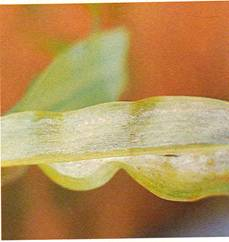
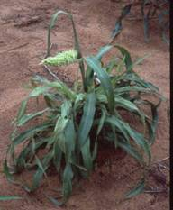
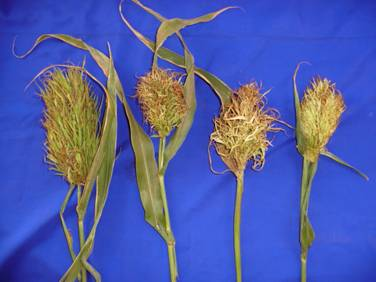
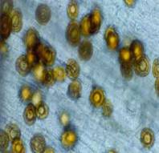

| Home |
| PEARLIMILLED |
MAJOR DISEASES |
| 1. Downy mildew |
| 2. Smut |
| 3. Rust |
| 4. Ergot or Sugary disease |
| Questions |
| Download Notes |
PEARLMILLED :: MAJOR DISEASE :: DOWNY MILDEW
Downy mildew - Sclerospora graminicola
Symptoms
Infection is mainly systemic and symptoms appear on leaves and inflorescence. The initial symptoms appear in seedlings at three to four leaf stages. The affected leaves show patches of light green to light yellow colour on the upper surface and the corresponding lower surface bears white downy growth of the fungus consisting of sporangiophores and sporangia. The yellow discolouration often turns to streaks along veins. As a result of infection young plants dry and die ultimately. Symptoms may appear first on the upper leaves of the main shoot or the main shoot may be symptom free and symptoms appear on tillers or on the lateral shoots.
|  |  |
Symptoms |
|
The inflorescence of infected plants gets completely or partially malformed with florets converted into leafy structures, giving the typical symptom of green ear.
Infected leaves and inflorescences produce sporangia over a considerable period of time under humid conditions and necrosis begins. The dry necrotic tissues contain masses of oospores.
{kind=link}
|  |
Green ear symptoms |
Pathogen
The mycelium is systemic, non septae and intercellular. Short, stout, hyaline sporangiophores arise through stomata and branch irregularly, with stalks bearing sporangia. Sporangia are hyaline, thin walled, elliptical and bear prominent papilla. Oospores are round in shape, surrounded by a smooth, thick and yellowish brown wall.
|  |
Oospores |
Favourable Conditions
- Very high humidity (90%).
- Presence of water on the leaves
- Low temperature of 15-25˚C favor the formation of sporangiophore and sporangia.
Disease cycle
The oospores remain viable in soil for 5 years or longer giving rise to the primary infection on seedlings. Secondary spread is through sporangia produced during rainy season. The dormant mycelium of the fungus is present in embryo of infected seeds.
Management
- Deep ploughing to bury the oospores.
- Roguing out infected plants.
- Adopt crop rotation.
- Grow resistant varieties WCC-75, Co7 and Co (Cu)9.
- Treat the seeds with Metalaxyl at 6g/kg.
- Spray Mancozeb 2 kg or Metalaxyl + Mancozeb at 1 kg/ha on 20th day after sowing in the field.